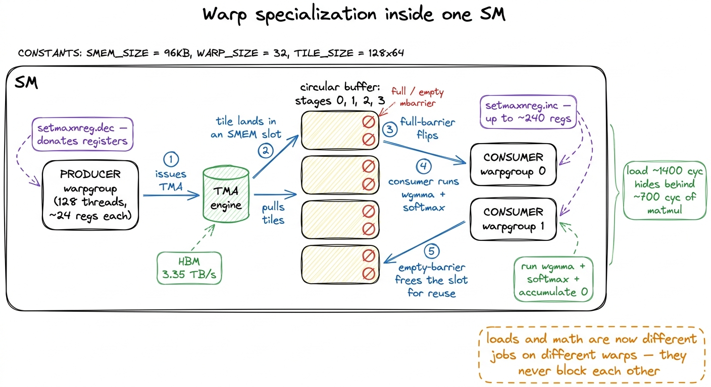
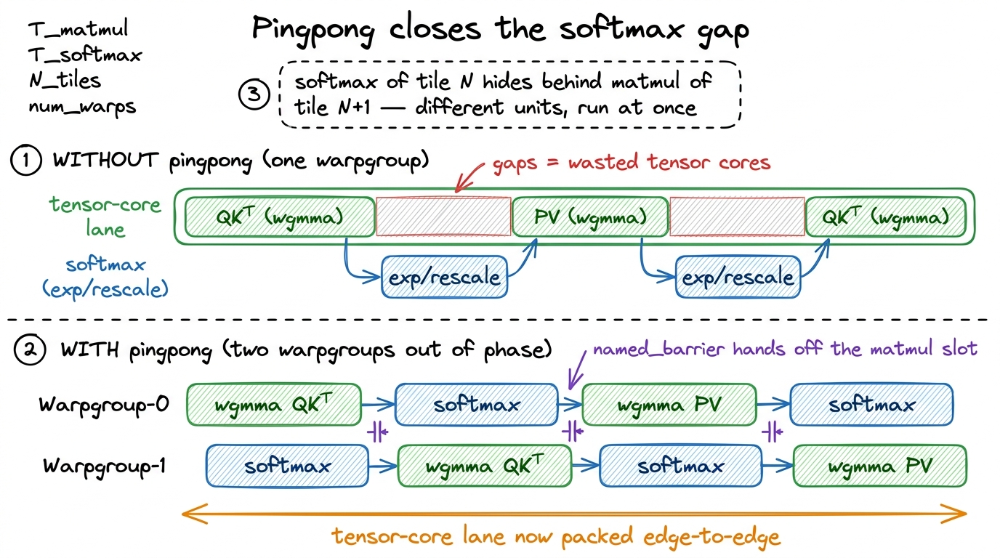
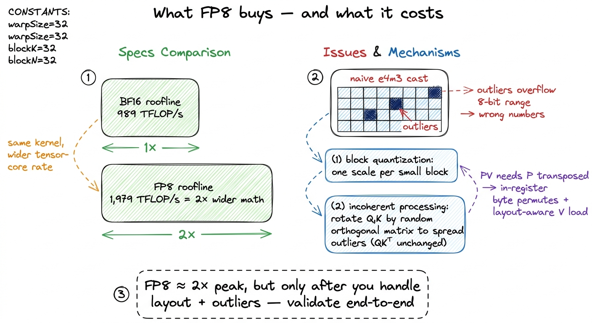
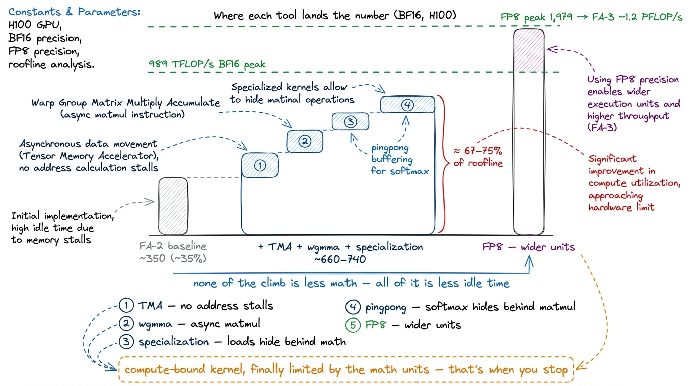

FlashAttention III: Hopper & async FA3
Let me start with the question this whole article is really about: why does the fastest attention kernel in the world spend so much effort doing nothing new? FlashAttention-3 computes exactly the same numbers as FlashAttention-2 — the same QKᵀ, the same softmax, the same PV. It does not do less arithmetic. And yet on an H100 it runs almost twice as fast. That is the surprising thing, and it is worth stopping on before we write a single line of code: the speedup is not from better math, it is from better scheduling. If you understand why that sentence is true, you understand FlashAttention-3.
To get there we need a little foundation first. So let me build it up from the very bottom, assuming you know what a matrix multiply is and roughly what attention does, and nothing more about GPUs than that they are fast at multiplying matrices.
What attention actually asks the hardware to do
Attention, stripped to its skeleton, is three steps repeated over tiles. You have a query matrix Q, a key matrix K, and a value matrix V. You compute a score for every query against every key — that is S = QKᵀ, one matrix multiply. You turn those scores into probabilities with a softmax along each row — exponentiate, sum, divide. Then you use those probabilities to take a weighted average of the values — O = P·V, a second matrix multiply. Score, normalize, mix. That is the whole thing.1 The "flash" part is that you never write the full S matrix to memory. Instead you stream over tiles of K/V, keep a running max and a running sum per row, and rescale the output accumulator as you go — the online softmax. That is what makes attention memory-cheap. FA-3 keeps this online formulation exactly; it changes only how the tiles are scheduled onto the hardware. See softmax from scratch.
Now here is the first thing to notice, and it is the seed of everything. Two of those three steps — the two matrix multiplies — are the kind of work a GPU's tensor cores were built for. Dense multiply-accumulate, thousands of them, fused. But the middle step, the softmax, is not tensor-core work. Exponentiating a number and summing a row is done on completely different silicon: the special-function unit (the SFU, which computes exp) and the ordinary CUDA cores. So a single attention tile hands work to two different execution units, back to back, and — this is the crux — it hands it to them in a strict order. You cannot normalize scores you have not computed, and you cannot mix values by probabilities you have not normalized.
Hold onto that. A strict order between two different pieces of hardware is exactly the setup where one of them sits idle waiting for the other.
 figure rendering · Think of attention as an assembly line with two stations that must tak
figure rendering · Think of attention as an assembly line with two stations that must takThat factory picture is the mental model for the entire article. One expensive station (the tensor cores), one cheap station (softmax), and they are forced to take turns. Every optimization we make is one idea: stop letting the expensive station wait.
Why the naive Hopper kernel wastes the chip
Let me put a number on the waste, because the whole worklog rhythm here is hypothesis → number → why. Take FlashAttention-2, recompile it for Hopper's sm_90a target, run it in BF16 on an H100 SXM5, and measure. It lands around 35–45% of peak tensor throughput — call it ~350 TFLOP/s against the 989 TFLOP/s BF16 ceiling of an H100.
Now, is that a memory problem? Let's actually check, because "it's slow" is not a diagnosis. Attention's arithmetic intensity — FLOPs done per byte moved — for any reasonable head dimension sits comfortably to the right of the H100's roofline ridge point. Translated: this workload has plenty of math per byte, so it is compute-bound, and a compute-bound kernel should run near the tensor-core ceiling. FlashAttention-2 runs at a third of it. So the bytes are not the bottleneck. Something else is stealing the time.
Point Nsight Compute at it and the story is neither "memory-bound" nor "compute-bound." It is serialization. Go back to the assembly line. Every time a warp stops matmul-ing to run softmax, the tensor cores — the most expensive silicon on the entire die — stand still. And they stand still for longer than you would guess, because the SFU is slow at exp relative to how fast the tensor cores chew through matmul.2 Rough rates: the tensor cores retire hundreds of TFLOP/s of MMA, while the SFU issues MUFU.EX2 (the exponential) at a couple hundred GFLOP/s per SM. Even though softmax is a tiny fraction of the total FLOPs, at these lopsided rates it can eat a real fraction of the wall-clock time if you let it run alone with the tensor cores idle beside it.
 figure rendering · FlashAttention-2 serializes softmax against the matmul; on Hopper that
figure rendering · FlashAttention-2 serializes softmax against the matmul; on Hopper thatWhy did this not hurt so much on the previous generation? Because on Ampere (A100), the SM did math and moved data with the same hands and at more balanced rates — the tensor cores were not so vastly faster than everything else, so the softmax gap was a smaller fraction of the total. Hopper widened the gap. It made the tensor cores enormously faster and split data movement off onto dedicated hardware, and in doing so it turned FA-2's small stall into a big one. A kernel tuned for a balanced chip looks lazy on an unbalanced one. So the fix has to be Hopper-native. Let me build the four Hopper tools we need, one at a time, each one attacking a specific idle gap.
Tool 1 — TMA: stop spending threads on address arithmetic
The first tool is the one that costs the least thought and frees up the most room. It is the Tensor Memory Accelerator, or TMA.
Here is the question it answers: when you copy a tile of K from global memory into shared memory, who computes all those addresses? On Ampere, the answer was: every thread in the block. Each of the 128 or 256 threads figured out its own byte offset into K, issued its own cp.async, and burned registers holding the index math. That is a lot of threads doing bookkeeping instead of math.
TMA replaces the whole ritual with one instruction. You describe the tile once, on the host, as a tensor map — a small 128-byte descriptor (CUtensorMap) built with cuTensorMapEncodeTiled that records the base pointer, the tile shape, the strides, and the swizzle pattern.3 The tensor map is 128-byte aligned and is passed into the kernel as a __grid_constant__ argument. Matching the swizzle mode you bake into the descriptor to the swizzle wgmma will expect for its shared-memory operands is the single most common source of silent garbage in a first Hopper kernel — the code runs, the numbers are just wrong. Then, inside the kernel, one thread issues cp.async.bulk.tensor, and a dedicated hardware unit copies the entire 2D tile from global memory (GMEM) into shared memory (SMEM) — computing every address itself, and swizzling the layout on the way in so the tensor cores can read it without bank conflicts.
Now, be careful here, because it is easy to reach for the wrong reason TMA helps. The payoff is not mainly bandwidth. Plain cp.async could already saturate the H100's 3.35 TB/s of HBM if you tiled sensibly. The real payoff is freed registers and freed warps. The threads that used to grind out address math are now free to do actual math, and the copy runs entirely in the background against a shared-memory barrier. It is address generation, lifted off the SM.
// One thread kicks off the whole tile copy; hardware does the rest.
if (threadIdx.x == 0) {
cde::cp_async_bulk_tensor_2d_global_to_shared(
smem_K[stage], &tma_map_K, k_col, kv_row, bar[stage]);
cde::cp_async_bulk_tensor_2d_global_to_shared(
smem_V[stage], &tma_map_V, k_col, kv_row, bar[stage]);
// expected-bytes tells the barrier exactly how much traffic to wait for
bar[stage].arrive_and_expect_tx(K_TILE_BYTES + V_TILE_BYTES);
}
// every other thread does NOT touch an address — it just waits on bar[stage]Notice arrive_and_expect_tx. The barrier is told, up front, how many bytes to expect. When the hardware has landed exactly that many, the barrier flips and the waiting threads wake up. No thread polled memory, no thread computed an offset. In the attention loop I issue the TMA load for the next K/V tile while the current tile is still being computed on — the same double-buffering idea we used to hide GMEM latency in double buffering with cp.async, now with the address arithmetic gone entirely.
That is one idle gap addressed: the SM no longer waits on its own address bookkeeping. But we have not yet touched the matmul-vs-softmax stall. For that we need the next tool.
Tool 2 — wgmma: the matmul becomes a warpgroup's job
Hopper's tensor-core instruction is wgmma — warpgroup matrix-multiply-accumulate — and it is sm_90a-only. The name carries the whole idea, so let me unpack it slowly.
On Ampere, the unit of tensor-core work was one warp issuing mma.sync (32 threads). On Hopper, the unit is a warpgroup: four warps, 128 threads, issuing a single instruction like wgmma.mma_async.sync.aligned.m64n64k16. That instruction shape reads: multiply a 64×16 tile by a 16×64 tile and accumulate into a 64×64 result. Do the arithmetic on what one such instruction represents — 64 × 64 × 16 = 65,536 multiply-accumulates — issued as one instruction across 128 threads. It replaces 65,536 scalar fused-multiply-adds. That is the density we are buying.4 The n dimension of wgmma is flexible — you'll see m64n64k16 up through m64n256k16 — while m=64 and k=16 are fixed for the BF16 path. Bigger n means one instruction covers a wider output tile, which amortizes issue overhead. The accumulator D lives distributed across the warpgroup's registers, 32 floats per thread for the 64×64 case.
Two properties of wgmma matter for us, and they are exactly the two we will exploit.
First, it is asynchronous. You issue the wgmma, it retires in the background on the tensor cores, and you must wgmma.wait_group before you read the result. You issue several, wgmma.commit_group to close a batch, then wgmma.wait_group to drain. This is what makes overlap even possible — an async matmul can be in flight while the same warps do something else, like softmax.
Second, at least one operand reads directly from shared memory through a descriptor. On Ampere you had to stage matmul operands into registers by hand — a big, register-hungry dance. On Hopper, TMA lands the tile in SMEM already swizzled, and wgmma reads it in place through a 64-bit matrix descriptor that packs the SMEM base address (in 16-byte units, since SMEM operands are 16-byte aligned), the stride offsets, and the swizzle mode.5 You build that descriptor from a real SMEM address, not a generic C++ pointer — convert first with __cvta_generic_to_shared. Swizzle mode lives in the top two bits (63:62); set them to select 128-byte swizzling and the hardware de-conflicts the shared-memory banks for you, retiring the padding tricks earlier kernels needed.
For attention this maps cleanly: QKᵀ is one wgmma group producing the score tile S in the accumulator; after softmax turns S into probabilities P, O += P·V is a second wgmma group. The O accumulator lives across the entire K/V loop, rescaled by the running max at each step, exactly as the online softmax demands.
 figure rendering · On Hopper the matmul is a warpgroup instruction — four warps, one asyn
figure rendering · On Hopper the matmul is a warpgroup instruction — four warps, one asynWe now have loads off the SM (TMA) and an async matmul that reads SMEM in place (wgmma). But if every warp still does the same thing — load, matmul, softmax, matmul — we have not actually decoupled anything. Time to split the warps up.
Tool 3 — Warp specialization: producers and consumers
Here is the natural next question. TMA runs on a hardware unit. wgmma runs asynchronously. So why should every warp be doing the same job? On Ampere they had to, because there was no dedicated copy engine — every warp pitched in on both loading and computing. On Hopper that symmetry is wasted. So we specialize the warpgroups inside a block into two roles.
- A small producer warpgroup whose only job is to issue TMA loads for future
K/Vtiles and flip the barrier when a tile lands. It does almost no math and needs almost no registers. - One or two consumer warpgroups that wait on the barrier, run the
wgmmamatmuls, do the softmax, and accumulateO.
They talk through a shared-memory circular buffer — a ring of a few tile slots (a queue depth of 3 to 5 is typical) — with a pair of barriers per slot: a full barrier the producer flips when data is ready, and an empty barrier the consumer flips when it has drained the slot and the producer may refill it. This is precisely what Hopper's mbarrier and its arrive/wait primitives exist for.
The virtue is structural, and worth saying plainly: data movement and compute are now separate jobs on separate warps, instead of two chores interleaved by hand inside every warp. The producer runs as far ahead as the buffer depth allows. The consumers never wait on address math again — they wait only on the full barrier, and by the time they check it, the tile is usually already there.
Let me put a number on why this hides latency. Suppose loading one tile costs on the order of ~1,400 cycles and running the tensor cores over that tile costs about ~700 cycles. If the producer stays one to two slots ahead, the consumer's 700 cycles of matmul run underneath the producer's 1,400 cycles of loading — the load latency vanishes into the shadow of ongoing compute. That is the entire point of a deep enough queue: the slow load never stops the math.6 The barrier API you choose matters more than you'd think. Using the higher-level CUDA barrier API can generate hundreds of token synchronizations per load iteration; dropping to the raw PTX mbarrier API can collapse that to a handful (one producer arrive, two consumer waits). In GEMM worklogs that single change was worth about 10%. Fewer sync instructions, more instructions left for real work.
There is one more Hopper knob that makes specialization genuinely pay: register reallocation. The producer barely uses registers; the consumers are starving for them, because that O accumulator is large. So you rebalance. The producer calls setmaxnreg.dec to give back its register budget, and the consumers call setmaxnreg.inc to claim it.7 The register file is 256 KB per SM — 65,536 registers of 32 bits — and each thread is capped at 255. Concretely, worklogs drop producers to ~24 registers/thread and push consumers up to ~240, which packs roughly 64,512 registers ≈ 98.5% of the file into use. Symmetric allocation would waste the producer's share on threads that never touch the accumulator.

figure rendering · Warp specialization: one lean producer warpgroup drives TMA into a shaThis buys the big load-versus-compute overlap. But look back at the assembly-line figure — we still have not fixed the original stall, the one that opened the article. The softmax between the two matmuls still runs on the SFU while the tensor cores wait. Specialization decoupled loads from compute; it did not decouple softmax from matmul. That is the last and cleverest tool.
Tool 4 — Pingpong: hide softmax behind the matmul
Here is the observation that unlocks it. The softmax of one tile and the wgmma of the next tile are independent — neither depends on the other — and they run on different execution units: softmax on the SFU and CUDA cores, matmul on the tensor cores. Two independent jobs on two different units. That is the textbook recipe for overlap. If you can just get one warpgroup doing softmax while another does matmul, the two units run at the same time and the grey gap closes.
So you run two consumer warpgroups out of phase and let them pingpong. While warpgroup 0 does the softmax on its score tile — the exp, the row-max, the rescale, all SFU-and-CUDA-core work — warpgroup 1 runs its QKᵀ wgmma on the tensor cores. Then they swap: warpgroup 1 does its softmax while warpgroup 0 runs its next matmul. The warp scheduler co-issues them happily because their resources don't collide — one is on the SFU, the other on the tensor cores. And this is the payoff: the tensor cores never see the grey idle gap, because the other warpgroup's softmax is always filling the shadow of the current matmul.
// Two consumer warpgroups, ping-ponging on a named barrier to stay
// out of phase: one runs softmax while the other runs wgmma.
if (warpgroup_id == 0) {
softmax_rescale(S0, m0, l0); // SFU / CUDA-core heavy
named_barrier_arrive(SCHED_BAR); // hand the matmul slot to wg1
} else {
named_barrier_wait(SCHED_BAR); // take the matmul slot
wgmma_QK(S1, smemQ, smemK[stage]); // tensor-core heavy — overlaps wg0's softmax
wgmma_commit_group();
}There is a smaller, second-order version of the same trick within a single warpgroup — a "2-stage" split where you cut the score tile in half so the PV wgmma of the first half overlaps the softmax of the second half. Same principle at a finer grain: always keep a matmul ready to hide the softmax behind. This is the overlap philosophy of operator fusion, except applied at the level of instruction scheduling inside one kernel, rather than across separate kernels.

figure rendering · Without pingpong the tensor-core lane has softmax-shaped holes. With tNow let's collect the win, worklog-style. Start: FA-2 on H100, BF16, ~350 TFLOP/s (~35%). Add TMA + wgmma + warp specialization + pingpong, and BF16 attention on H100 moves to roughly 660–740 TFLOP/s — about 67–75% of the 989 TFLOP/s BF16 roofline. That is nearly a 2× speedup, and I want to say again what makes it remarkable: essentially none of it came from doing less arithmetic. Every gain came from never letting the tensor cores idle. Same math, less waiting.
Tool 5 — FP8: feeding a wider math unit
There is one more lever, and it is the only one that changes the arithmetic itself: precision. Hopper's tensor cores run FP8 (the e4m3 format) at double the BF16 rate — a dense ceiling near 1,979 TFLOP/s, which is just 2 × 989. So if the model can tolerate 8-bit inputs, the very same scheduled kernel climbs toward the low PFLOP/s range; FA-3 reports attention close to ~1.2 PFLOP/s in FP8.
But — and here is where beginners get burned — FP8 attention is not a free dtype swap. Two things need real care.
First, layout. The FP8 wgmma path wants both operands in a specific arrangement — effectively k-major — which means the PV matmul needs P transposed relative to the way softmax naturally produces it. FA-3 fixes this with in-register byte permutes plus a layout-aware V load through TMA. Annoying, but mechanical.
Second, and more important: accuracy. Attention distributions are full of outliers — a few very large scores dominate each row. If you quantize Q, K, V to e4m3 naively, those outliers blow out the small dynamic range of 8-bit floats and the numbers go wrong. The fix is two-part: block quantization (a separate scale factor per small block of the tensor, so one giant value doesn't ruin the whole block's scale) and incoherent processing (multiply Q and K by a shared random orthogonal matrix first, which mathematically spreads the outliers across many entries without changing QKᵀ, since the rotation cancels). Together they pull FP8 attention error back down to the level of a well-quantized baseline.8 This block-scaling idea is exactly what Blackwell then bakes into hardware as NVFP4 — 4-bit e2m1 elements that carry FP8 block scales natively in the tensor core. So the scaling FA-3 does in software on H100 becomes a native format on B200. The trend line is clear: the hardware keeps absorbing the precision tricks the kernels invent. See what changed across A100/H100/B200.
The lesson generalizes past attention: low precision is a systems decision, not a cast. You validate it end-to-end — on real distributions, against the full-precision reference — before you let yourself believe the TFLOP/s number the profiler prints.

figure rendering · FP8 doubles the tensor-core ceiling toward ~2 PFLOP/s, but a blind casReading the number honestly
Let me close by tying it back to the roofline, because that is how you know when to stop.
We said at the start that attention is compute-bound — its arithmetic intensity sits to the right of the H100 ridge, so it should be limited by the width of the math units, not by memory. FA-2 was not limited by that. It was limited by a hidden serialization: softmax stalling the tensor cores, loads stalling on address math. Every one of the five tools above was an attack on a specific stall.
- TMA removed the stall on address arithmetic.
- wgmma gave us an async, SMEM-reading matmul — the raw material for overlap.
- Warp specialization made loading and computing separate jobs, so loads hide behind math.
- Pingpong made softmax and matmul run at the same time on their different units, so the tensor cores stop idling.
- FP8 widened the math unit itself.
Getting BF16 to ~75% of a 989 TFLOP/s machine, and FP8 into the PFLOP/s range, means the kernel is finally limited by the thing you want to be limited by — the width of the tensor cores — which, per the three regimes, is exactly the sign that you should put the profiler down.

figure rendering · The climb from FA-2's 35% to FA-3's 75% of the BF16 roofline is entireThe real through-line — the thing to carry into the rest of the Hopper section — is that none of these four scheduling tools is about attention at all. TMA, wgmma, warp specialization, and register reallocation are the general Hopper vocabulary. A good sm_90a GEMM uses the identical toolkit: TMA to stage tiles, wgmma warpgroups to multiply, a producer/consumer ring buffer to hide loads, register reallocation to feed the accumulators. That is exactly why the warptiled GEMM at 93.7% of cuBLAS is the natural next read, and why the A100→H100→B200 tour frames every one of these features as a response to the same widening gap between how fast the tensor cores can compute and how fast the rest of the chip can feed them. Attention was simply the first place that gap grew so wide the idle tensor cores were impossible to ignore.9 FlashAttention-3 (Shah, Dao, and collaborators, 2024) is the published kernel that assembles exactly these sm_90a pieces — TMA, wgmma, warp specialization, pingpong scheduling, and FP8 — and reports up to ~740 TFLOP/s in BF16 (≈75% utilization) and near ~1.2 PFLOP/s in FP8 on H100. The numbers in this article are of that published shape, not a fresh benchmark run.